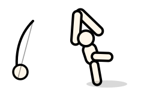
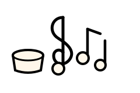
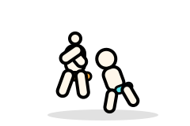
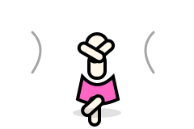
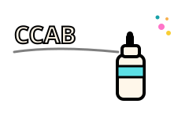
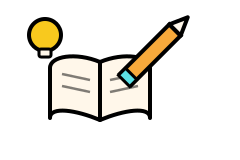

Cultura
Capoeira
Rodas semanais que unem ginga, música e ancestralidade afro-brasileira, trabalhando disciplina, respeito e trabalho em equipe.
Somos a CCAB — Centro Cultural Antonieta Barros, uma ONG do Rio de Janeiro que transforma vidas e fortalece comunidades, abrindo caminhos para crianças e jovens em vulnerabilidade social por meio da arte, da cultura e do conhecimento.
A CCAB — Centro Cultural Antonieta Barros é uma organização sem fins lucrativos dedicada a transformar vidas e fortalecer comunidades por meio da cultura e da educação. Nosso trabalho amplia o acesso de crianças e jovens a oportunidades culturais, educativas e artísticas, criando pontes entre talento e oportunidade.
O que nos move e nos guia em cada projeto, em cada comunidade que alcançamos.
Erradicar a desigualdade social por meio do incentivo à cultura e à educação.
Expandir o conhecimento e a cultura, promovendo inclusão, aprendizado e transformação social.
Atuamos ao lado de crianças e jovens em vulnerabilidade social que, muitas vezes, não têm oportunidades de conhecimento nem acesso fácil à cultura. Trabalhamos para mudar esse cenário, uma história de cada vez.
Nossas aulas e oficinas acontecem de segunda a sexta, sempre com uma turma pela manhã e outra à tarde, para que cada criança e jovem encontre o horário certo para participar.

Rodas semanais que unem ginga, música e ancestralidade afro-brasileira, trabalhando disciplina, respeito e trabalho em equipe.

Aulas de canto, percussão e instrumentos que despertam o talento musical e estimulam a expressão e a autoconfiança.

Treinos que ensinam técnica e etiqueta do tatame, fortalecendo disciplina, respeito ao próximo e autocontrole.

Turmas de ritmos brasileiros e dança contemporânea, incentivando expressão corporal, coordenação e autoestima.

Oficinas de arte urbana em que cada jovem aprende técnicas de spray e desenvolve intervenções para a própria comunidade.

Apoio pedagógico em português, matemática e outras disciplinas, acompanhando de perto a trajetória escolar de cada aluno.
Aulas e oficinas acontecem de segunda a sexta, das 8h às 16h, com intervalo das 11h às 12h. Cada turma tem vagas limitadas — inscreva-se pelo formulário de voluntariado ou fale com a nossa equipe para saber como matricular uma criança ou jovem.
A CCAB é mantida por um time colaborativo, formado por pessoas de diferentes áreas que doam tempo e talento para transformar vidas. Sempre há espaço para novas pessoas contribuírem — seja com horas de trabalho voluntário, seja atuando diretamente nos projetos.
Estamos no Rio de Janeiro e prontos para conversar sobre parcerias, voluntariado e projetos.